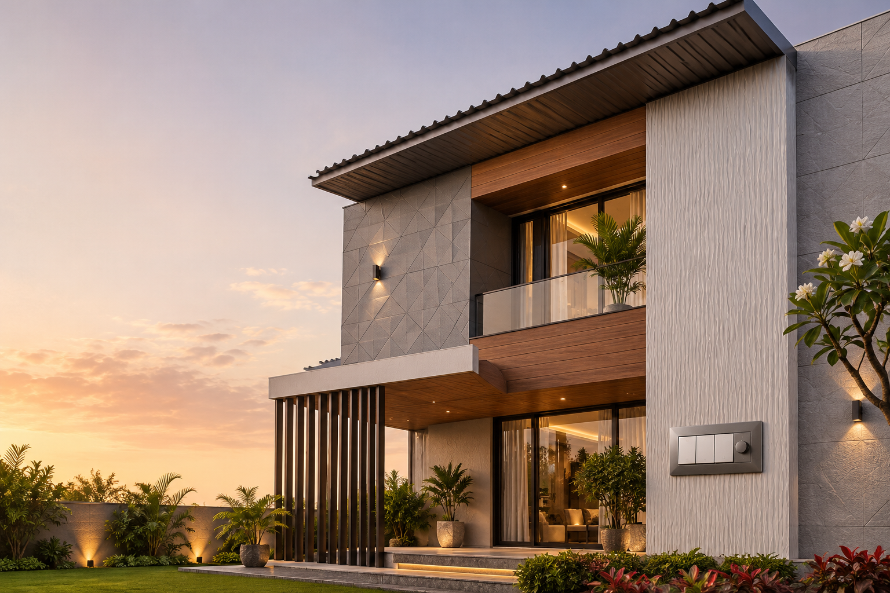

A legacy built on trust.
Badrudin Yoosufbhai & Company has been serving the building materials trade in Surat since 1932.

Generations of
building relationships.
Badrudin Yoosufbhai & Company is a long-standing building materials supplier and trader based on Station Road, Surat, Gujarat.
Over the years, the business has served the construction and building materials market with a range that includes cement, fibre cement products, AAC blocks, AC roofing sheets, wall cladding cement boards and fire bricks.
We are a distributor for Everest Boards and Fibre Cement Solutions, helping customers access a range of board, cladding, ceiling and walling products.
For every part of
the build.
Our product range serves the practical needs of people planning, designing and executing construction projects.
Builders & Contractors
Materials for ongoing construction and project requirements.
Architects & Designers
Boards, cladding, textures and finishes for design-led spaces.
Homeowners & Businesses
Product options for renovation, new builds and commercial interiors.